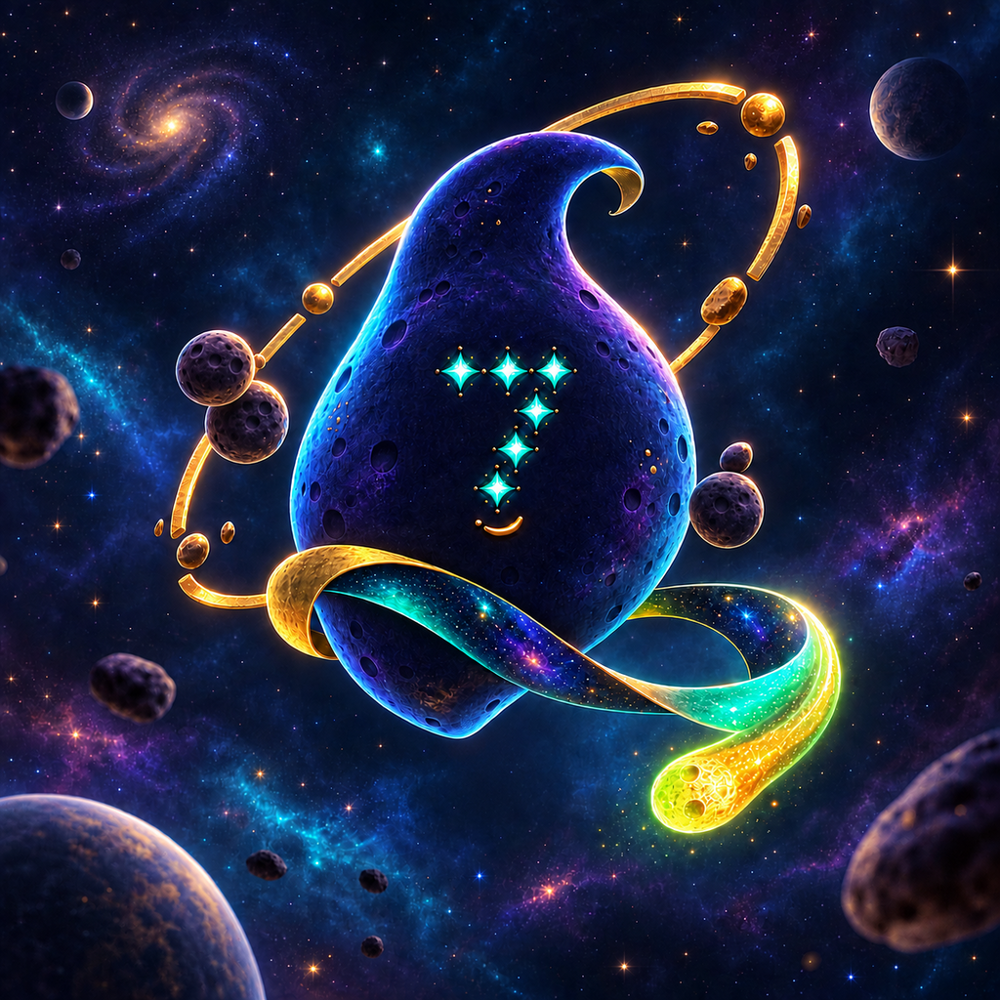

The first signal
Far beyond the noisy edge of the internet, Mivazu lived beneath seven quiet moons. One evening, his celestial receiver captured a chaotic transmission made of green candles, screaming animals and one repeated question: “When moon?”
Incoming transmission · Solana orbit
Mivazu crossed the cosmos searching for intelligent life. He landed on Solana and found memecoin traders instead.
EcJhHL39A2yEqL91tM4eWYMTf98AB2qVVMAzLKz7pump
OBJECT M-07 · SIGNAL STABLE
01 / Origin transmission
Far beyond the noisy edge of the internet, Mivazu lived beneath seven quiet moons. One evening, his celestial receiver captured a chaotic transmission made of green candles, screaming animals and one repeated question: “When moon?”
Believing the transmission must come from an advanced civilization, Mivazu folded his orbit into a ribbon and followed the signal across the dark. The journey took seven moons and exactly zero sensible trading decisions.
Mivazu arrived expecting philosophers. He found traders refreshing charts, celebrating candles and posting pictures of animals. The evidence for intelligent life remained inconclusive, but the memes were excellent—so he stayed.
02 / Know the visitor
Mivazu does not predict candles, promise destinations or pretend to understand Earth finance. He observes, collects memes and records the strange behavior of the Solana timeline.
Red candle or green candle, Mivazu keeps watching.
Lost jokes, strange art and community lore belong in the archive.
Every wallet, meme and reply becomes another Earth data point.
Normal was never available on the Seventh Moon.
03 / Mission archive
Short observations recovered from Mivazu’s interstellar mission log.
“Earth intelligence remains unconfirmed. Meme density is unusually high.”
“Subject sold the bottom and returned five minutes later. Further observation required.”
“They call strangers ‘family’ after one green candle. Earth customs are moving.”
“No route home requested. The Moon Seven are assembling.”
04 / The Moon Seven
The Moon Seven turn Mivazu’s arrival into a living story. Create art, invent lore, name cosmic objects, translate transmissions and help newcomers identify the authentic address.
Make original memes, art and strange transmissions.
Share the verified mint address and report impersonators.
Help new arrivals without pressure or promises.
Keep the culture playful, curious and unmistakably Mivazu.
05 / Official object record
Mivazu is a community-driven meme coin built around original lore, creative participation and the shared adventures of the Moon Seven. The community carries the signal and helps decide where the story travels next.
EcJhHL39A2yEqL91tM4eWYMTf98AB2qVVMAzLKz7pump06 / Verify the signal
Names and tickers can be copied. The Solana mint address is the identity that matters.
Use the mint address shown on this website and our pinned X post.
Check every character before swapping or sharing a link.
Admins will never request seed phrases, private keys or wallet transfers.
Warn the community when you see impersonators or unofficial addresses.
07 / Community flight path
Every stage grows through community ideas, original creations and the people who keep Mivazu’s signal moving.
Launch the official token, website and verified community channels.
Signal ignitionRelease original meme templates, stickers and community transmissions.
Culture formationCollect community-created lore and celebrate the best strange contributions.
Story expansionLet the community decide where Mivazu’s story travels next.
Destination openFinal transmission
Follow the official signal, verify the mint address and meet the Moon Seven.